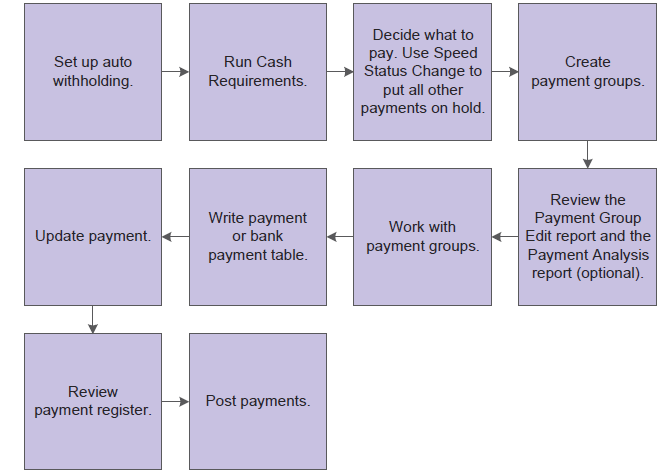

This graphic shows the programs you use to process payments:

| Purpose |
| Overview |
| Scope |
| Details |
| Automatic Payment Processing |
| Prerequisite Set Up for Automatic Payment Groups |
| Understanding Create Payment Control Groups (R04570) |
| Key Factors For Including Voucher(s) In a Payment Group |
| Setting Data Sequence for Create Payment Control Groups (R04570) |
| Number of Payment Groups |
| Factor/Special Payee Payment Processing |
| Understanding Create Payment Control Group with Multi Currency |
| BACS and EFT Create Payment Control Group Set Up |
| How to Use Different or Separate GL Accounts to Track EFT Payments |
| Understanding Payment Groups for Vouchers with Discounts |
| Examples of Discount Processing |
| Example 1: Take discounts only up to the discount due date |
| Example 2: Take discounts up to n days after the discount due date |
| Example 3: Take all discounts regardless of the due date |
| Understanding Next Numbers for Create Payment Control Groups |
| Printing Payment Attachment (R04573) |
| Use Different Attachment Version |
| Summarize Printing Payments |
| Frequently Asked Questions |
| Question 1: Why are the outputs from the Create Payment Control Groups report (R04570) and the Cash Requirements report (R04431) different? |
| Question 2: Can the data sequence be modified in the Create Payment Control Groups UBE R04570? |
| Question 3: Does the Sequence Review (P0415) determine the print sequence of the Create Payment Control Groups report (R04570) output? |
| Question 4: How does the Create Payment Control Groups report (R04570) distinguish prepayment vouchers from debit notes? |
| Question 5: Why are debit memos not netting with positive vouchers? |
You use automatic payments to group vouchers and produce multiple payments in a single payment run.
Automatic payment processing enables you to manage your payments efficiently and take advantage of favorable discount terms whenever possible. Use automatic payment processing to pay vouchers during your usual payment cycle.
After you process your vouchers, you can prepare to write your payments. Before you write payments, you must create payment groups to organize vouchers that can be paid together. For example, you can organize vouchers by bank account and payment instrument in separate groups. Then, the vouchers can be paid with the proper check stock. You use the payment groups when you review and write payments.
The Create Payment Control Groups program is a batch process that you run once for each payment cycle.
When you create payment groups, the system populates these temporary tables:
Because the system stores the payment group information in temporary work tables, you can revise payment groups, split payments, revise value dates, and undo payment groups without affecting the Accounts Payable Matching Document (F0413) table and the Accounts Payable Matching Document Detail (F0414) table.
This document is intended for users who are creating payments through the Automatic Payment Process.
Automatic payments are used to group vouchers and produce multiple payments in a single payment run. Automatic payment processing enables you to manage your payments efficiently and take advantage of favorable discount terms whenever possible. Use automatic payment processing to pay vouchers during your usual payment cycle.
This graphic shows the process for automatic payment processing:

During automatic payment processing, the system works with these document types:
During automatic payment processing, the system works with this batch type:
This graphic shows the programs you use to process payments:
For information on the prerequisite set up for using Automatic Payment Processing, please see Overview Of Automatic Payment Processing Within EnterpriseOne Accounts Payable.
The Create Payment Groups (R04570) program selects open vouchers to be paid. Only vouchers with a Pay Status (data dictionary item PST) of A (Approved) are selected. the Speed Status Change (P0411S) application can be used to update a voucher's Pay Status (PST) from H (Held) to A (Approved). The processing options and data selection of the Create Payment Control Groups (R04570) should be used to limit the selection of vouchers to be paid. After a voucher is selected for a payment control group, its Pay Status (PST) is changed from A (Approved) to # (Payment in Process). The Create Payment Control Groups UBE (R04570) updates three temporary work files.
The Create Payment Control Groups (R04570) program sequences payments within payment groups using a default sequence and the settings in the processing options. It is recommended that you not change the Data Sequence for the Create Payment Control Groups (R04570) UBE.
The system creates a new payment group when it encounters a change in any of the following values as it reads the records:
Within the payment groups, the system creates a new payment when it encounters a change in any of these values as it reads the records:
The system also creates payments within payment groups based on the Payment Creation (SCK) option on the payee's Supplier Master (F0401) record. For example, if The Payment Creation (SCK) field is set to N (By Supplier) and that supplier is listed on vouchers for three different suppliers in the payment group, the system generates three payments for that payee.
Important: The sequence for creating payment groups and payments is separate from the sequence for printing payments using the Write process. The sequence for printing payments using the Write process is determined by Processing Option 1: Sequence ID on the Printing tab of the Create Payment Control Groups (R04570)program. This processing option does not affect the sequence of creating payment groups.
One payment group is generated when vouchers have the same:
The voucher's Currency Code (CRCD) is stored in the Accounts Payable Ledger (F0411) record and is populated during voucher entry and cannot be revised.
Checks are remitted to the Address Book number as indicated in the voucher (F0411) Payee field (data dictionary item PYE). The Payee field is populated when the voucher is created. The system either populates this field with the supplier number (data dictionary item AN8) or with the Alternate Payee number as set up in the Supplier Master (P04012). Processing Option 5: Alternate/Payee on the Defaults tab in the Voucher Entry Master Business Function (P0400047) determines how the field is populated during voucher creation as follows:
The Payee field can be updated on existing vouchers through the Speed Release application (P0411S).
Processing Option 4: Payment Currency on the Printing tab of Create Payment Control Groups ( R04570) determines which currency is used for multi-currency payments. One of the following methods can be selected:
An explanation of each option and examples of the functionality are included below.
Bank Account Monetary Unit
When Processing Option 4: Payment Currency is Blank, the payment is determined by the the GL Bank Account (GLBA) of the voucher in the Accounts Payable Ledger (F0411). If the bank account is a non-monetary account, the payment is made in the currency assigned to the company. If the bank account is a monetary account, the payment is made in the currency assigned to the bank account.
| Example | Voucher Currency | AA Ledger | CA Ledger | Bank Account | Payment Currency |
|---|---|---|---|---|---|
| 1 | Domestic Voucher in USD | USD | N/A | Non-monetary or USD | USD |
| 2 | Foreign Voucher in GBP | USD | GBP | Non-monetary | USD |
| 3 | Foreign Voucher in GBP | USD | GBP | Monetary GBP | GBP |
If there is a difference in the exchange rate for the date the voucher was created and the date it is paid, a gain or loss is calculated.
Voucher Domestic Currency
If the Processing Option 4: Payment Currency is 1 (pay in the Voucher Domestic Currency), the payment is made in the domestic currency of the voucher.
| Example | Voucher Currency | AA Ledger | CA Ledger | Bank Account | Payment Currency |
|---|---|---|---|---|---|
| 1 | Domestic Voucher in USD | USD | N/A | Non-monetary or USD | USD |
| 2 | Foreign Voucher in GBP | USD | GBP | Non-monetary | USD |
| 3* | Foreign Voucher in GBP | USD | GBP | Monetary GBP | No payment made |
*Because it is not possible to make a USD payment out of a GBP bank account, a payment is not created.
No gain or loss is generated because the exchange rate of the payment is the same as the exchange rate of the voucher.
Voucher Foreign Currency
When the Processing Option 4: Payment Currency is 2 (pay in the Voucher Foreign Currency), the payment will be made in the foreign currency of the voucher.
| Example | Voucher Currency | AA Ledger | CA Ledger | Bank Account | Payment Currency |
|---|---|---|---|---|---|
| 1 | Foreign Voucher in GBP | USD | GBP | Non-monetary | GBP |
| 2 | Foreign Voucher in GBP | USD | GBP | Monetary GBP | GBP |
If there is a difference in the exchange rate for the date the voucher was created and the date it is paid, a gain or loss is calculated.
Voucher Current Domestic Amount
If Processing Option 4: Payment Currency is 3, the payment is made in the domestic currency of the voucher using today's exchange rate as defined in the Currency Exchange Rates table (F0015).
| Example | Voucher Currency | AA Ledger | CA Ledger | Bank Account | Payment Currency |
|---|---|---|---|---|---|
| 1 | Domestic Voucher in USD | USD | N/A | Non-monetary or USD | USD |
| 2 | Foreign Voucher in GBP | USD | GBP | Non-monetary | USD |
| 3* | Foreign Voucher in GBP | USD | GBP | Monetary GBP | No payment made |
If there is a difference in the exchange rate for the date the voucher was created and the date it is paid, a gain or loss is calculated.
Alternate Currency Payment
If Processing Option 4: Payment Currency is 4, the payment is not made in the domestic or foreign currency, but in a third (alternate) currency.
| Example | Voucher Currency | AA Ledger | CA Ledger | Bank Account | Alt Currency | Payment Currency |
|---|---|---|---|---|---|---|
| 1* | Domestic Voucher in USD | USD | N/A | Monetary USD | EUR | No payment made |
| 2 | Domestic Voucher in USD | USD | N/A | Non-monetary | EUR | EUR |
| 3* Not Possible See Document 1432665 and E1: 04: Automatic Payment Process (P04571) – Monetary Bank Account Validation Document 1949227 | Domestic Voucher in USD | USD | N/A | Monetary EUR | EUR | EUR |
| 4 | Foreign Voucher in GBP | USD | GPB | Non-monetary | EUR | EUR |
| 5* | Foreign Voucher in GBP | USD | GPB | Monetary GBP | EUR | No payment made |
| 6 | Foreign Voucher in GBP | USD | GPB | Monetary EUR | EUR | EUR |
In Examples 3 and 6, Processing Option 5: Currency Disagreement on the Currency tab of the Voucher Entry Master Business Function (P0400047) should be set to 1 to allow the voucher to be created using a Euro monetary account. If Currency Disagreement is not allowed, a Bank Currency Code Incorrect error is issued when entering either of these vouchers. Alternatively, Processing Option 3: GL Bank Account on the Printing tab of Create Payment Group (R04570) can be used to override the vouchers' original GL Bank Account with the Euro monetary account.
If there is a difference in the exchange rate for the date the voucher was created and the date it is paid, a gain or loss is calculated.
When creating payment groups using either Electronic Funds Transfer (EFT) or Bank Automated Clearing System (BACS) formats, consider the following processing options on the Bank Tape tab of Create Payment Control Groups (R04570):
Follow these steps below:
The Create Payment Control Groups program (R04570) has several processing options used to control how the system selects vouchers and processes discounts:
It is not possible to adjust or add a discount during the Create Payment Control Groups process (R04570). Discount adjustments to a payment must be done on the voucher prior to creating a payment. If the voucher has already been included in a payment control group, remove the voucher from the payment group using the 'Undo' function from the Row Exit menu in Work with Payment Groups application (P04571).
The following image shows an example for using Processing Option 3: Discount Cutoff Date:

Results
Only those discounts where the payment is sent and/or received by the supplier by the due date will be taken (discount due date after or equal to the value in Processing Option 3: Discount Cutoff Date). All other vouchers where the discount due date is before this value are paid in full (no discount).
Results
Only those discounts where the payment will be sent and/or received by the supplier by n days after the due date will be taken (discount due date after or equal to the value in Processing Option 3: Discount Cutoff Date). All other vouchers where the discount due date is before this value are paid in full (no discount).
Results
All discounts are taken for all vouchers in the run.
When running the Create Payment Control Groups (R04570) program, the system assigns the payment group a unique number to identify the payment group in the three worktables that are used in the payment process (F04571, F04572, and F04573). This number prevents payments in one payment group from being combined with payments in different payment groups.
The JD Edwards EnterpriseOne Accounts Payable system uses the Next Numbers (F0002) table to assign these payment group numbers. The Next Numbers (F0002) table is locked when a number is being assigned to one payment group and is released after a payment group has been assigned its identifying number. The Next Numbers (F0002) table increments until it reaches its maximum (a number greater than 99 million) and resets the next number for payment control groups to 1.
Accounts Payable (A/P) check attachments are generated automatically if the following two conditions are met:
In the pristine versions of the check print programs, each pay stub can print a maximum of 10 detail lines. A total of 99 pay stubs can print per payment. When Processing Option 2: Print Attachments on the Printing tab of Create Payment Control Groups (R04570) is set to 1, a single payment prints with one pay stub referring to the attachments. The attachment prints all pay items. To print attachments, an attachment program must be assigned to the Payment Instrument (PYIN) being used. In the Payment Instrument Defaults application (P0417), select a payment instrument. Indicate a program number in the Attachment Print Program (PGMA) field. The default attachment program is R04573. If Processing Option 2: Print Attachments on the Printing tab is Blank, detail lines that do not fit on the first check stub are printed on subsequent check stubs until the total number of detail lines are printed. The final check reflects the check total. Prior checks are recorded as void payments.
It would be required to specify the desired version for R04573 report for the correct Payment Instrument and GL Bank Account setup in P0417 application. In order to override the version for existing Payment Control Groups, consider the following:
There are two processing options in the Create Payment Control Groups UBE (R04570) that determine if pay items are summarized during printing:
Answer 1: The two reports yield different results when the data selection does not match exactly. Another possible cause is that a processing option for one of the reports excludes vouchers based on specific criteria, while the other does not. Ensure the data selection and processing options on both reports are set to retrieve the same data and re-run the reports.
Answer 2: Changing the data sequencing on this UBE can cause unpredictable results. It is not recommended that the standard data sequencing be changed.
Answer 3: The Sequence Review (P0415) is only used to determine the print sequence of checks. The Create Payment Control Groups report (R04570) has its own data sequencing that will determine how the output is printed.
Answer 4: When creating a prepayment voucher, the Miscellaneous Code - A/R and A/P (RP1) field in the Supplier Ledger table (F0411) is populated with a value of 1. The Prepayment Selection application (P0411P) uses the value in the Miscellaneous Code field to determine how to process each prepayment record.
Answer 5: Verify the following information and set up to ensure that vouchers (document type PV) and debit memos (document type PD) net correctly: